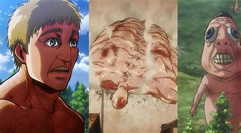

Season 1
The series begins with a sudden attack on Wall Maria by the Colossal Titan and the Armored Titan, leading to a breach in the wall and the fall of humanity's outermost territory. Eren Yeager, Mikasa Ackerman, and Armin Arlert join the Scout Regiment to fight back against the Titans. Eren discovers he can transform into a Titan and uses this power to seal the breach in Wall Rose.
Season 2
The season delves deeper into the mystery of the Titans and reveals that some of the Scouts themselves can transform into Titans. Reiner Braun and Bertholdt Hoover are revealed as the Armored and Colossal Titans, respectively. The Scouts discover that Titans are actually humans, and the Beast Titan makes its first appearance, raising further questions about the true nature of the Titans.
Season 3
This season focuses on the political intrigue within the Walls. The Scouts uncover a conspiracy by the government to suppress the truth about the Titans and the outside world. Historia Reiss is revealed to be the true heir to the throne, and she is crowned queen after a coup d'état led by the Scouts. Eren learns more about his father's past and the origins of his Titan powers.The Scouts launch a mission to retake Wall Maria and discover the truth hidden in Eren's basement. They confront Reiner, Bertholdt, and the Beast Titan in a deadly battle. The Scouts win, and they learn the truth about the world outside the walls: humanity is confined to the island of Paradis, and they are part of a race called the Eldians who are persecuted by the rest of the world. The basement reveals a broader history, including Marley, a nation that seeks to exploit the power of the Titans.
Season 4
The final season shifts focus to the Marleyan perspective. It explores the lives of Eldians living in Marley and their struggles under oppression. Eren infiltrates Marley and declares war, leading to a devastating battle in the city of Liberio. The season ends with Eren forming an alliance with a group called the Jaegerists and taking drastic measures to secure Eldia's future. =The conflict between Paradis and Marley intensifies. Eren's plan to use the Founding Titan's power to activate the "Rumbling" and destroy the world is revealed. The Scouts and Warriors from Marley come together to stop Eren and prevent the total annihilation of humanity. The season is filled with intense battles, moral dilemmas, and significant character developments as the story hurtles towards its conclusion.
Titans Gallery
Abnormal Titans are a variant of Pure Titans that exhibit unusual behavior or possess unique abilities. They do not conform to the typical patterns of Pure Titans and often pose greater threats due to their unpredictable nature.

The Nine Titans are nine powerful Titan forms that were created after the death of Ymir Fritz, the first Titan. These Titans were passed down through generations and played a significant role in the history of the Eldian Empire. Each Titan has unique abilities and characteristics

Pure Titans are the most common type of Titan. They vary in height, typically ranging from 3 to 15 meters. These Titans have no intelligence and act purely on instinct, driven by an insatiable hunger for human flesh.
About the characters
- Eren Yeager: The main protagonist of the series. He vows to destroy all Titans after his mother is killed by one. Eren has the ability to transform into the Attack Titan and later discovers more about his powers.
- Mikasa Ackerman: Eren’s adoptive sister and one of the best soldiers in the series. She is fiercely loyal to Eren and protects him at all costs. Mikasa is part of the Ackerman clan, giving her enhanced strength and combat abilities
- Armin Arlert: Eren and Mikasa’s best friend. Although initially physically weak, Armin has a brilliant mind and becomes a strategic genius. He later gains the power of the Colossal Titan.